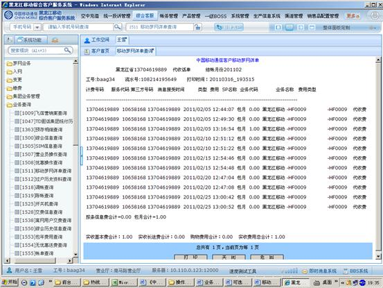

<p class=MsoNormal><a name="_Toc278894281"><b><span lang=EN-US
style='font-size:14.0pt;font-family:宋体'>1</span></b></a><b><span
style='font-size:14.0pt;font-family:宋体'>、进入方式</span></b></p>

<p class=MsoNormal align=left style='text-align:left;line-height:150%'><span
style='font-family:宋体'>在“请输入手机号码查询”处输入客户的手机号码，点击查询按钮，点击综合客服</span><span
lang=EN-GB>-</span><span style='font-family:宋体'>普通变更</span><span lang=EN-GB>-</span><span
style='font-family:宋体'>移动梦网详单查询，或在“快速转入”处输入代码</span><span lang=EN-GB>1511</span><span
style='font-family:宋体'>移动梦网详单查询。</span></p>

<p class=MsoNormal><a name="_Toc278894282"><b><span lang=EN-US
style='font-size:14.0pt;font-family:宋体'>2</span></b></a><b><span
style='font-size:14.0pt;font-family:宋体'>、界面形式</span></b><b><span
style='font-size:14.0pt;font-family:宋体'>及操作步骤说明</span></b></p>

<p class=MsoNormal align=left style='text-align:left;line-height:150%'><span
style='line-height:150%;font-family:宋体'>（<span lang=EN-US>1</span>）、</span><span
style='line-height:150%;font-family:宋体'>在“请输入手机号码查询”处输入客户的手机号码，点击查询按钮，点击综合客服</span><span
lang=EN-GB style='line-height:150%'>-</span><span style='line-height:150%;
font-family:宋体'>普通变更</span><span lang=EN-GB style='line-height:150%'>-</span><span
style='line-height:150%;font-family:宋体'>移动梦网详单查询，或在“快速转入”处输入代码</span><span
lang=EN-GB style='line-height:150%'>1511</span><span style='line-height:150%;
font-family:宋体'>移动梦网详单查询。</span></p>

<p class=MsoNormal><span lang=EN-US></span></p>

<p class=MsoNormal><span style='font-family:宋体'>（<span lang=EN-US>2</span>）、选择“查询类型”，按“时间范围”或“出帐年月”查询。</span></p>

<p class=MsoNormal><span lang=EN-US></span></p>

<p class=MsoNormal style='margin-left:36.0pt;text-indent:-36.0pt'><span
lang=EN-US style='font-family:宋体'>①&#1;、<span style='font:7.0pt "Times New Roman"'>&nbsp;
</span></span><span style='font-family:宋体'>按“时间范围”查询：根据客户要求，输入查询的“开始日期”及“结束日期”。</span></p>

<p class=MsoNormal style='margin-left:36.0pt;text-indent:-36.0pt'><b><span
lang=EN-US style='font-family:宋体'>②&#1;、<span style='font:7.0pt "Times New Roman"'>
</span></span></b><span lang=EN-US></span></p>

<p class=MsoNormal><span style='font-family:宋体'>点击“查询”。</span></p>

<p class=MsoNormal><span lang=EN-US></span></p>

<p class=MsoNormal><span style='font-family:宋体'>②、按“出帐年月”查询：根据客户需求，输入查询的“出帐年月”。</span></p>

<p class=MsoNormal><span lang=EN-US></span></p>

<p class=MsoNormal><span style='font-family:宋体'>点击“查询”。</span></p>

<p class=MsoNormal><span lang=EN-US></span></p>

<p class=MsoNormal><span style='font-family:宋体;color:black'>（</span><span
lang=EN-GB style='color:black'>3</span><span style='font-family:宋体;color:black'>）、进入移动梦网详单，查询即可。</span></p>

<p class=MsoNormal><span lang=EN-GB style='color:blue'></span></p>
